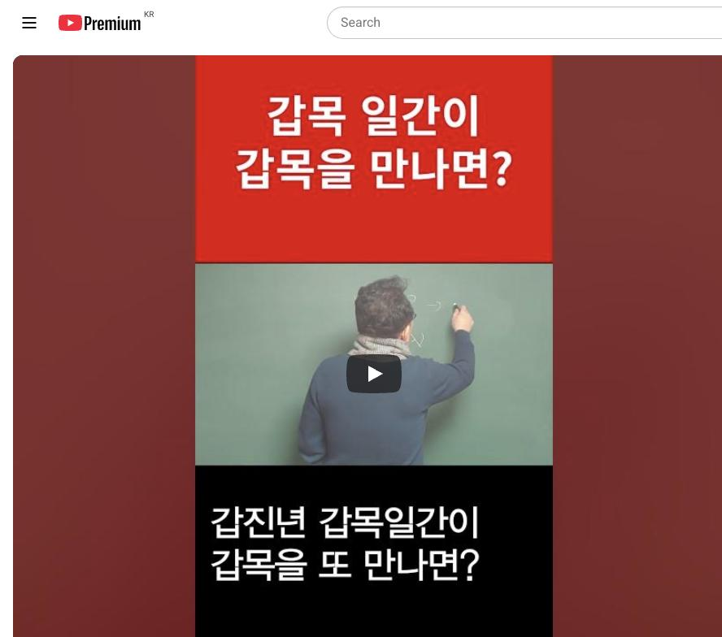

남촌물상TV 전체 문서 › Shorts S0039
갑목 일간이 갑목을 만나면? 상담문의 : 010-3139-6645

| 문서 번호 | S0039 (Shorts (쇼츠)) |
|---|---|
| 영상 URL | https://www.youtube.com/watch?v=017awi2bBZM |
| 영상 ID | 017awi2bBZM |
| 게시일 | 2024-01-02 |
| 길이 | 0:48 (48초) |
| 조회수 | 2,030회 (수집 시점 기준) |
| 카테고리 | Howto & Style |
| 자막 | ko (자동생성) |
| 수집 시각 | 2026-08-30 17:03 (KST) |
영상 설명 (YouTube 설명 원문 그대로)
갑목 일간이 갑진년 갑목을 또 만나면 생기는 일 #갑목 #일간 #갑진년
전체 자막 (16구간 · 타임스탬프 클릭 시 해당 장면으로 이동)
[0:00]그럼 올해가 무슨 년이에요 갑진
[0:02]년이에요 그 갑진년 같은 경우에 갑목
[0:05]일간은 갑갑할 수 있는 일이 생기는
[0:08]거예요 그래서 어떤 일을 행할 때
[0:13]가각하다 방법이 필요할 것이다 그럼
[0:16]어떻게 할까요 어떤 운이면 좋을까요
[0:18]쉽게해서 같다면 히토가 와서 각기
[0:22]합을 해의 경우에 을목이 되면이
[0:25]을목이 등락에 할 수 있는 것이 이게
[0:28]해법이 그래서 올해
[0:31]이 갑진 연에 갑목 일관을 대주
[0:34]본다면 갑목 일간이 그 갑갑함을
[0:37]제거하는 것은 히토 작은 땅을 가지고
[0:41]이게 합을 하게 되면 제거할 수 있는
[0:43]능력이 되기 때문에 크게 일을 벌리지
[0:47]않는게 좋다 그럼
칠판 원국 판독 (영상 프레임을 AI가 시각 판독 · 원판 대조 필수)
불명
천간
甲
판독 신뢰도: 낮음
판독 노트: 갑목 일간이 갑목을 만나면 - 교수 등이 판을 가려 판독 불가, 판서 시작 단계만 식별 · 시점 0:22 · 해당 장면 보기↗
자막은 YouTube에서 제공하는 한국어 자동음성인식(ASR) 트랙의 원문입니다. 고유명사·한자 용어·숫자 표기에 자동인식 특유의 오류가 있을 수 있어, 원문을 가능한 한 그대로 보존했습니다. 위에 칠판 원국 판독 섹션이 있는 영상은 화면 프레임을 AI가 시각 판독한 것으로 신뢰도 표기를 확인하고, 없는 영상은 화면 도표가 문서에 포함되지 않습니다.